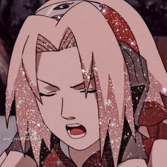
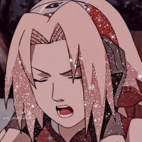

Sakura Kimdir ?
Sakura Yedinci Takımın tek kız üyesidir ve Hatake Kakashi tarafından eğitim almıştır bu eğitimlerde gösterdiği üstün çakra kontrol yeteneği sayesinde Kakashi'nin takdirini kazanmıştır. Daha sonra Naruto ile Sasukeyi geri almaya giderken Naruto'nun ağır yaralandığını fark eden Sakura Beşinci Hokage Tsunade'den eğitim almıştır. Ve eğitim sonunda güçlü, bilgili, zeki ve dünyanın en iyi Tıbbi Ninjalarından birisi olmuştur kendisi daha sonra Pain köye saldırdığı vakit de çok yardımı olmuştur bütün bir Hastaneyi kendi sorumluluğuna almıştır ve çok iyi idare etmiştir daha sonra Dördüncü Büyük Ninja savaşında da çok yardımı olmuştur birçok konuda hemde tek yumruğuyla Bin tane Juubi klonunu yere yok etmiştir kendisi işte bu kadar güçlü bu olay sırasında Hashirama ve Tsunade'nin takdirini kazanmıştır Tsunade kendisinden bile güçlü olduğunu söylemiştir Hashirama yani Shinobilerin Tanrısı ise Tsunade'den bile daha güçlü demiştir. Ve savaş sırasında Byakugou İn'i açmıştır ve bunu başarmak kadar zoru yoktur kendisi hem en güçlü kunoichidir hemde en zeki en sonunda ise Uchiha Sasukeyle yani küçüklük aşkıyla evlenmiştir...
 
